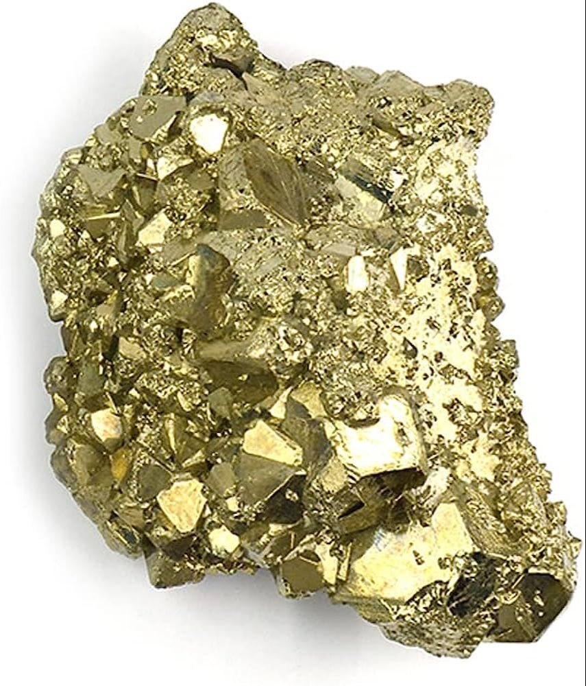
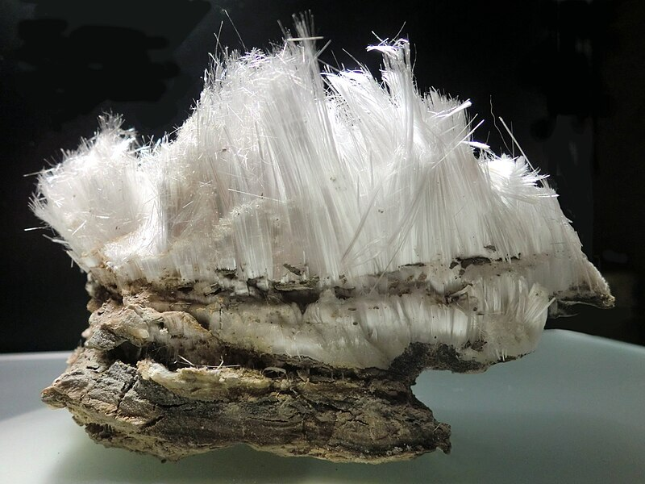
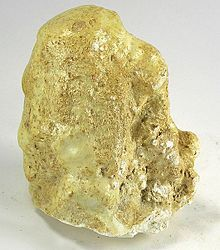
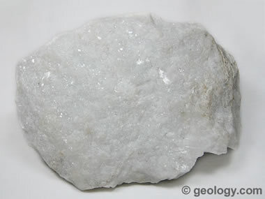

Ohio's Hidden Gem: Unveiling the Geological Wonders of Copperas Mountain (An In-Depth Exploration)

Nestled amidst the rolling farmlands of Ross County, Ohio, lies an unassuming peak that conceals a captivating story of eons past. Copperas Mountain, while modest in stature, boasts a geological significance that belies its size. Its exposed cliff face serves as a natural museum, showcasing layers of sedimentary rock teeming with fossils and a unique array of minerals that lend the mountain its name. This article delves deep into the captivating world of Copperas Mountain, offering a comprehensive guide for geology enthusiasts, fossil hunters, and curious adventurers alike.
A Voyage Through Time: Unveiling the Geological Tapestry
Millions of years ago, where Copperas Mountain now stands, a vast and vibrant ocean teemed with life. Over millennia, sediment from the erosion of continents and the skeletons of countless marine creatures settled on the seabed, gradually compacting into layers of shale and sandstone. Today, the exposed cliff face at Copperas Mountain serves as a natural cross-section, revealing a captivating record of this ancient environment, much like the pages of a geological textbook laid bare.
The predominant layer visible is the Ohio Shale, a fine-grained, black rock that whispers tales of a prehistoric sea teeming with diverse marine life. This formation, estimated to be around 380 million years old and belonging to the Devonian Period, is a treasure trove for paleontologists. Embedded within the Ohio Shale are the fossilized remains of creatures that dominated this ancient ocean. Brachiopods, shelled creatures resembling clams, with their distinctive two-part shells, are some of the most common fossils found here. Enthusiastic fossil hunters might also uncover the fossilized remnants of trilobites, segmented arthropods that once crawled along the seabed. These fossilized treasures offer a tangible connection to the vibrant ecosystem that thrived millions of years ago.
Higher up the cliff face, the Bedford Shale and Berea Sandstone narrate a different chapter in the geological history of Copperas Mountain. The Bedford Shale, a grey, less fissile rock compared to the Ohio Shale, marks a shift in the depositional environment. This layer hints at a period of deeper, quieter waters with less organic matter settling on the seabed. The Berea Sandstone, a fine-grained, yellowish-brown rock, signifies a period of shallow seas and shifting shorelines. Windblown dunes from nearby landmasses are believed to have contributed to the formation of this layer.
A particularly fascinating feature of the cliff face is the presence of large, spherical concretions. These iron-rich formations, some reaching up to five feet in diameter, were once soft mud that hardened over time. Mineral-rich fluids percolating through the rock layers deposited unique minerals within these concretions, creating a geological marvel within a marvel.
A Mountain Named for its Treasures: Unveiling the Mineral Wealth
The name "Copperas Mountain" or "Big Copperas Mountain" as it is sometimes called, offers a clue to its unique mineral wealth. Melanterite, a copper sulfate mineral also known as copperas, is the culprit behind the mountain's moniker. This mineral was historically used in the production of dyes, inks, and even medicines. Copperas Mountain's environment, rich in sulfates, fosters the formation of other interesting minerals as well. Visitors with a keen eye and some geological knowledge might spot pyrite nodules scattered amongst the loose rocks. Often mistaken for gold by hopeful prospectors, these "fool's gold" nodules offer a glimpse into the playful tricks that nature can play. More discerning visitors might find halotrichite-pickeringite (white), copiapite (yellow), and barite crystals scattered amongst the loose rocks, adding to the mountain's mineralogical diversity.
Exploring Copperas Mountain Responsibly: A Guide for Adventurers

For those seeking to explore the wonders of Copperas Mountain, responsible access is key. Located in Paxton Township, Ross County, the mountain is easily accessible via Copperas Mountain Road. While the exposed cliff face offers a mesmerizing view of geological history, safety is paramount. Due to the loose and weathered nature of the shale, climbing on the cliffs is strictly discouraged. However, the abundance of loose rocks at the mountain's base presents a treasure trove for responsible fossil and mineral collectors. A small rock hammer, chisel, and safety glasses are the basic recommended tools for collecting specimens, you can see other necessary tools here. Remember, the best practice is to leave most fossils in place for others to enjoy the wonders of Copperas Mountain. Responsible collecting means taking only a small sample of what you find, leaving the majority undisturbed for future generations to appreciate.
A Glimpse into the Past: Fossil Hunting at Copperas Mountain
For amateur paleontologists and fossil enthusiasts, Copperas Mountain offers a chance to step back in time and unearth remnants of a bygone era. The Ohio Shale, the most prominent layer exposed at the mountain, is a treasure trove of marine fossils. Here's a closer look at some of the commonly found fossils:
- Brachiopods: These shelled creatures, resembling clams, are some of the most abundant fossils found at Copperas Mountain. They come in various shapes and sizes, with the most common types being spiriférids and rhynchonellids. Spiriférids have a distinctive ribbed shell with a pointed hinge, while rhynchonellids have a smoother shell with a rounded hinge. Examining the intricate details of these fossils can provide insights into the anatomy and diversity of these ancient marine organisms.
- Trilobites: These segmented arthropods, once plentiful in the Paleozoic oceans, are another exciting find at Copperas Mountain. While complete trilobite fossils are less common, fragments of their exoskeletons, particularly the head shields (cephalons), are occasionally unearthed. The trilobite's distinctive cephalon with its raised central area (glabella) and multiple facial sutures can help identify the specific species.
- Other Marine Life: Keen-eyed collectors might also discover fossilized remnants of other marine creatures like crinoids (sea lilies), bryozoans (moss animals), and even the occasional fish bone or tooth. These fossils, though less abundant than brachiopods and trilobites, offer a more complete picture of the diverse ecosystem that thrived in the ancient sea that covered Ohio millions of years ago.
Responsible Fossil Collecting
While the thrill of uncovering a fossil is undeniable, responsible collecting practices are crucial for preserving this valuable scientific record. Here are some key points to remember:
- Leave most fossils in place: Fossil collecting should be done with a sense of stewardship. Resist the urge to collect every fossil you find. Leave the majority undisturbed for others to enjoy and for scientists to study in situ.
- Take only a small sample: If you do find a particularly well-preserved fossil you wish to keep, collect only a small representative piece. This allows others to enjoy the fossil and ensures there's enough material left for scientific study if needed.
- Use proper tools: A small rock hammer and chisel are essential tools for carefully extracting fossils from the rock matrix. Avoid using heavy tools that can damage the delicate fossils.
- Document your finds: Take pictures of the fossils in situ and note their location within the rock layer. This information can be valuable for scientists studying the local geology and paleontology.
- Respect the environment: Always follow "Leave No Trace" principles. Pack out all your trash and avoid disturbing the natural habitat at Copperas Mountain.
Beyond Fossils: Unveiling the Mineralogical Diversity
For geology enthusiasts with a keen eye for minerals, Copperas Mountain offers a chance to add some unique specimens to their collection. Here's a closer look at some of the minerals found at the mountain, beyond the copperas (melanterite) that lends it its name:
-
Pyrite
These brass-colored, metallic nodules, often mistaken for gold by hopeful prospectors, are a common sight at Copperas Mountain. Pyrite, also known as fool's gold, is an iron sulfide mineral that can form in various shapes, including cubes and clusters.
-
Halotrichite-Pickeringite
This white, fibrous mineral is a hydrated sulfate of aluminum and iron. It forms delicate, hair-like crystals that can add an interesting textural element to a mineral collection.
-
Copiapite
This yellow, hydrated iron sulfate mineral can form as powdery masses or as well-defined crystals. Its vibrant yellow color makes it stand out amongst the other minerals found at Copperas Mountain.
-
Barite
This white or colorless mineral is a barium sulfate that can be found as platy crystals or massive aggregates. While not as visually striking as some other minerals, barite is a valuable industrial mineral used in various applications.
Finding these minerals requires patience and a keen eye. Remember, safety comes first. Avoid collecting from unstable areas or climbing the cliffs. Focus on loose rocks at the mountain's base and use appropriate tools like a hand lens to examine the specimens closely.
RELATED TOPIC: Exploring the Diverse World of Chert Rocks
Exploring the Serpent Mound Impact Structure
A trip to Copperas Mountain can be conveniently combined with a visit to another geological wonder nearby - the Serpent Mound Impact Structure. Located just over 20 miles away in Adams County, this ancient geological formation is believed to be the result of a meteorite impact millions of years ago. The immense force of the impact created a crater that is now partially filled with sediment. The Serpent Mound, an effigy earthwork built by prehistoric peoples on top of the impact crater, adds an archaeological layer to the region's rich tapestry.

The Serpent Mound itself is a winding, snake-shaped earthen embankment that stretches for over 1,300 feet. The Serpent Mound stands as a testament to the ingenuity and cultural richness of the prehistoric inhabitants of the region. The combination of the Serpent Mound Impact Structure and Copperas Mountain paints a vivid picture of Ohio's deep geological history and the long presence of human cultures interacting with this unique landscape.
Preserving a Geological Legacy: The Importance of Responsible Exploration
Copperas Mountain and the Serpent Mound Impact Structure are invaluable natural landmarks offering a glimpse into Ohio's geological past and its rich cultural heritage. Responsible exploration and appreciation of these sites are crucial for ensuring their preservation for generations to come. Here are some key points to remember when visiting these locations:
- Stay on designated trails: Both Copperas Mountain and the Serpent Mound have established trails. Staying on these designated paths helps protect the fragile geological features and archaeological sites from erosion and damage.
- Respect the natural environment: Leave no trace behind. Pack out all your trash and avoid disturbing the plant and animal life at these locations.
- Minimize collecting: While responsible fossil and mineral collecting can be a rewarding experience at Copperas Mountain, remember to follow the guidelines mentioned earlier. Take only small samples and leave the majority undisturbed for others to enjoy and for scientific study.
- Educate yourself: Learn about the geological and archaeological significance of these sites before you visit. This will enhance your appreciation for these natural wonders and make your exploration more meaningful.
- Support conservation efforts: Consider volunteering or donating to organizations dedicated to preserving these important landmarks.
Avoiding Confusion: Distinguishing Copperas Mountains Across the US
While the allure of "Copperas Mountain" might pique your interest, it's important to note there are several locations bearing this name in the United States. To ensure you visit the Ohio gem we've been exploring, here's a quick guide to differentiate these Copperas Mountains:
- Copperas Mountain, Ohio: This is the focus of our exploration. Located in Ross County, Ohio, it boasts exposed layers of Ohio Shale, Bedford Shale, and Berea Sandstone, rich in fossils and unique minerals like melanterite (copperas). This unassuming peak offers a captivating glimpse into Ohio's geological history.
- Copperas Mountain, New Jersey: Situated in Sussex County, New Jersey, this location lacks the geological significance of its Ohio counterpart. Information about this location is scarce, but it's likely a smaller hill or topographical feature without the dramatic cliff face or abundance of fossils and minerals.
- Copper Mountain, Colorado: This prominent peak in Clear Creek County, Colorado, is a popular skiing and hiking destination. While the name might sound similar, there's no connection to the geological features found at Copperas Mountain, Ohio. Copper Mountain, Colorado, is formed from igneous and metamorphic rocks, offering a different geological story altogether.
Conclusion: A Journey Through Time Awaits
Copperas Mountain, with its exposed layers of sedimentary rock teeming with fossils and unique minerals, and the Serpent Mound Impact Structure, a testament to a cosmic event, offer a captivating glimpse into Ohio's deep geological history. For geology enthusiasts, fossil hunters, and curious adventurers alike, a journey to these hidden gems promises a unique opportunity to connect with the past and appreciate the wonders of our planet. By following responsible exploration practices, we can ensure that these natural wonders continue to inspire, educate, and ignite the spirit of discovery for generations to come. So, lace up your hiking boots, grab a camera (and perhaps a small rock hammer if you plan on responsible collecting at Copperas Mountain), and embark on a journey through time at Ohio's hidden gems – Copperas Mountain and the Serpent Mound Impact Structure.